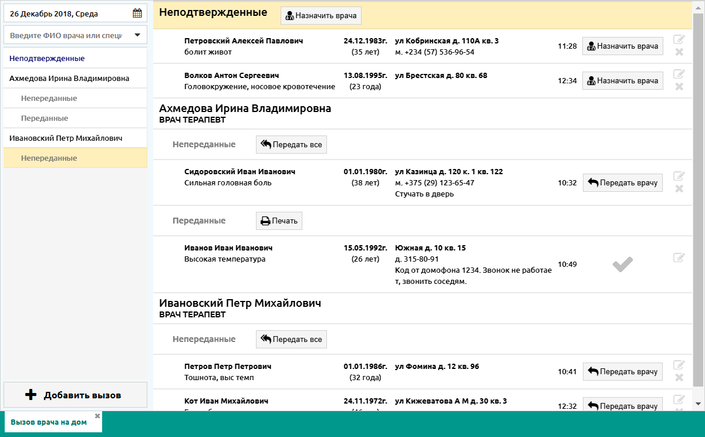
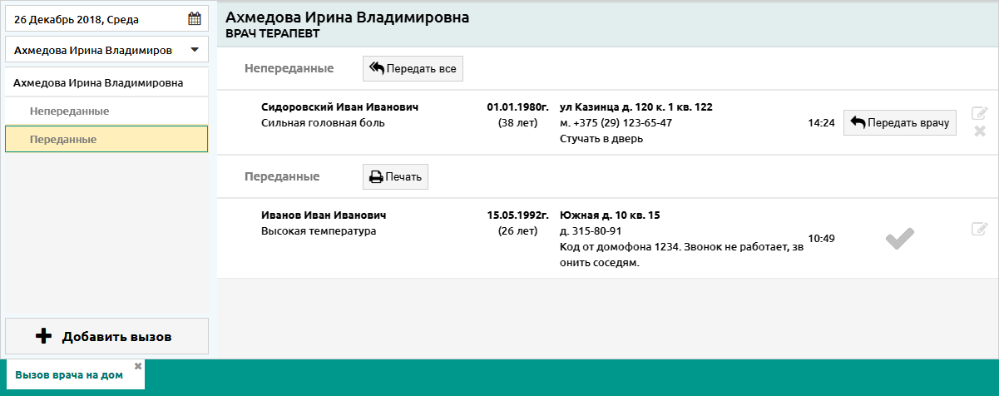
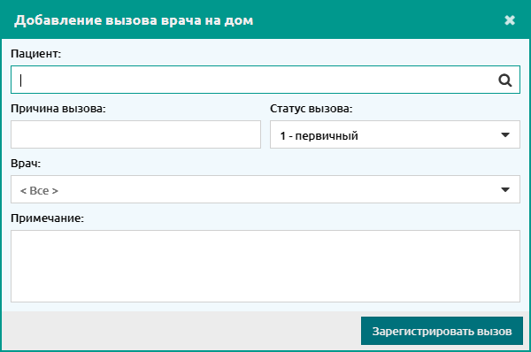

|
<< Click to Display Table of Contents >> Вызов врача на дом. Основная форма |
  
|
|
<< Click to Display Table of Contents >> Вызов врача на дом. Основная форма |
|
Вызывается при клике на пункт "Вызов врача на дом" вертикального меню. Может отображать данные в двух режимах: "вызовы по всем врачам", "вызовы по одному врачу".

Форму условно можно разделить на две части: основная область и область навигации.
Основная область содержит список вызовов, разбитый по группам. Каждый вызов представлен в виде "плашки", на которой располагается информация: ФИО пациента, причина вызова, дата рождения, полных лет, адрес, телефон, время вызова, кнопка управления вызовом (кнопки может не быть, тип может изменяться), кнопки редактирования и удаления.
Вызовы сгруппированы следующим образом:
•Неподтвержденные. Вызовы, для которых не назначен врач - вызовы, поступившие с сайта. Справа от названия раздела есть кнопка Назначить врача - служит для назначения врача всем вызовам. Эта же кнопка есть и в плашке вызова - для назначения врача одному выбранному вызову. При клике на кнопки открывается форма выбора врача в модальном режиме. После выбора врача вызов(ы) становится непереданным и перемещается в группу "Непереданные" этого врача, время изменяется на текущее. Вызов можно редактировать и удалить.
•Врач. ФИО врача (и его специальность), которому назначен вызов. У врача вызовы могут быть двух типов: непереданные и переданные.
➢Непереданные. Вызовы, содержатся назначенные данному врачу. Справа от названия группы есть кнопка Передать все - служит для передачи всех вызовов врачу. Для передачи одного выбранного вызова служит кнопка Передать врачу. При клике на кнопки вызов(ы) становится переданным и перемещается в раздел "Переданные" этого врача, время изменяется на текущее. Вызов можно редактировать и удалить.
➢Переданные. В данном разделе содержатся вызовы, переданные врачу в работу. На плашке вместо кнопки управления вызовом появляется "галка" серого цвета. Переданные вызовы удалить нельзя (отсутствует кнопка удаления), но можно редактировать. Список вызовов можно распечатать: при клике на кнопку Печать открывается форма параметров отчёта Список поступивших вызовов врача на дом.
Область навигации располагается в левой части формы и содержит функциональные элементы:
•Дата. По умолчанию текущая, выбирается из календаря. Вызовы в основной области представлены согласно выбранной дате.
•Выбор врача. Поле для ввода и выбора врача, влияет на режимы работы формы. По умолчанию врач не указан - что соответствует режиму работы формы "вызовы по всем врачам". Если врач указан, то активируется режим "вызовы по одному врачу". В первом случае в основной области будут представлены вызовы всех врачей, а в навигаторе - все врачи и их группы, во втором случае - вызовы только выбранного врача, а в навигаторе - один врач и его группы.

•Навигатор. Может содержать пункты навигации: Неподтвержденные, ФИО врачей, группы вызовов (свои для своих врачей). Количество пунктов зависит от заполнения поля выбора врача. При клике на любой пункт навигации фокус в основной области переместится к соответствующему разделу.
•Кнопка Добавить вызов. При клике открывается редактор вызова.

Содержит элементы:
•Пациент. Поле ввода для поиска и выбора пациента из картотеки.
•Причина вызова. Текстовое поле, позволяет вводить с клавиатуры либо выбирать ранее вводимое: поле запоминает все введенные ранее значения и предлагает соответствующие при вводе.
•Статус вызова. Содержит значения первичный, повторный активное посещение. По умолчанию - первичный.
•Врач. Поле для ввода и выбора врача. По умолчанию после выбора пациента подставляется участковый врач.
•Примечание. Текстовое поле для ввода дополнительной информации к вызову.
•Кнопка Зарегистрировать вызов. При клике вызов сохраняется, редактор закрывается.